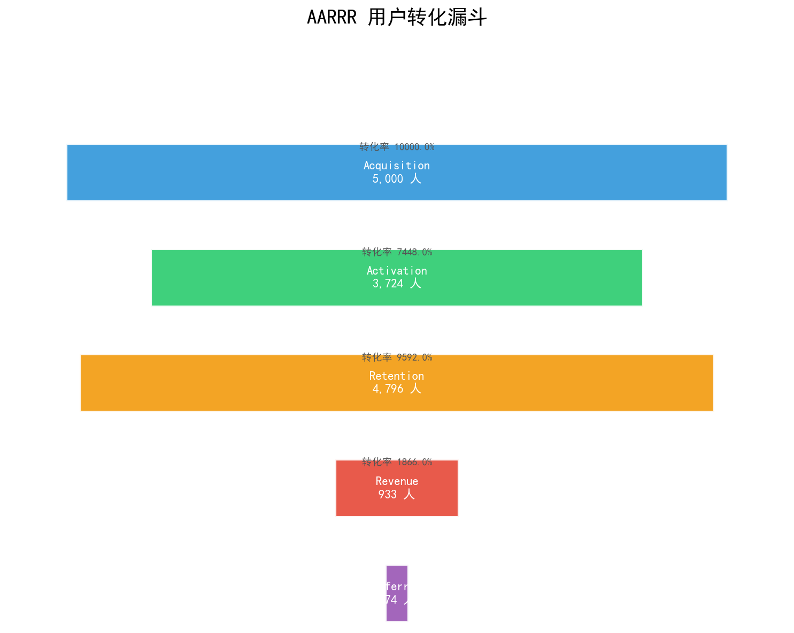
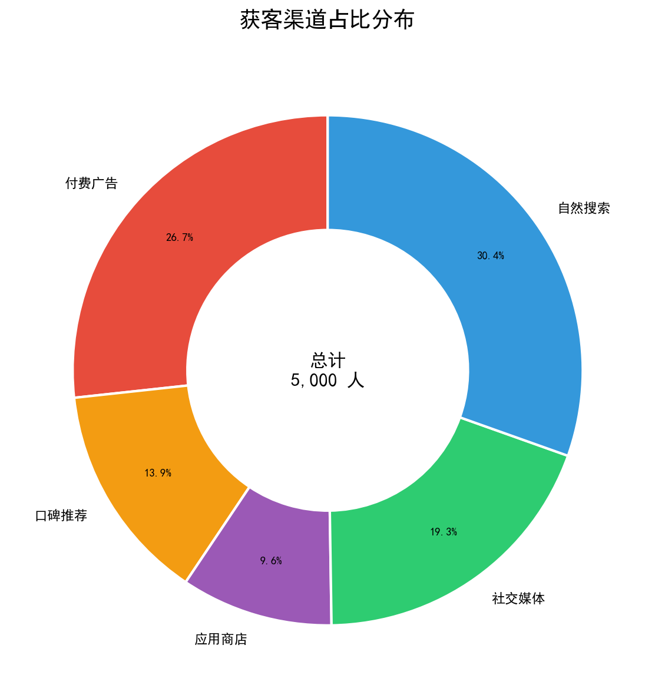
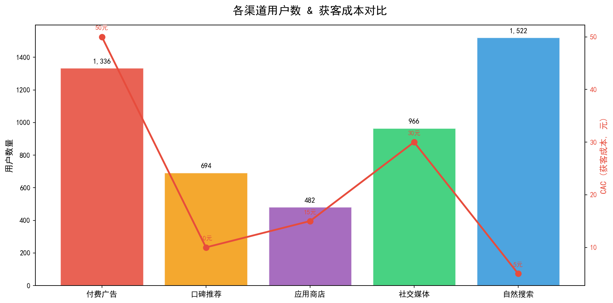
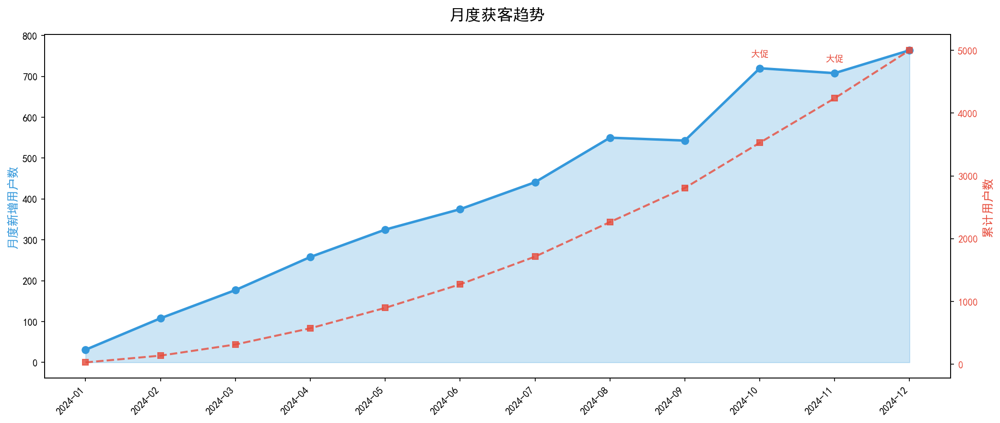
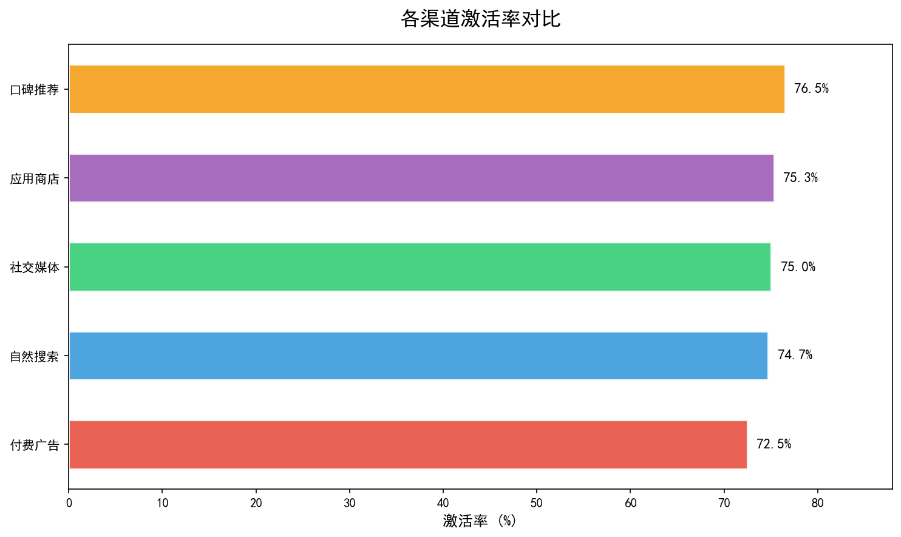
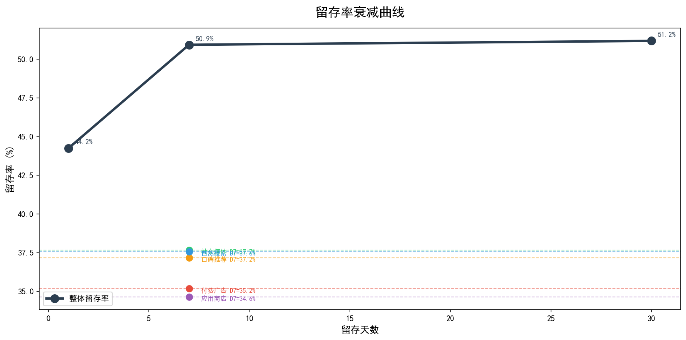
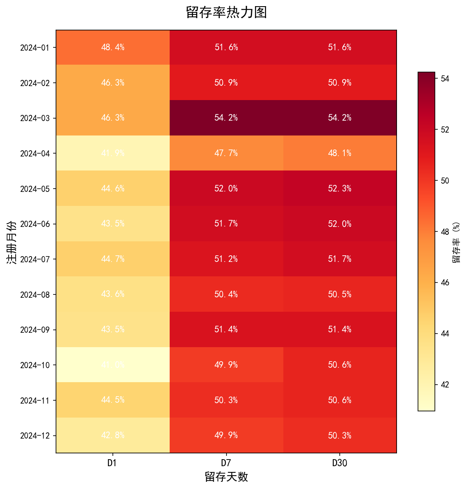
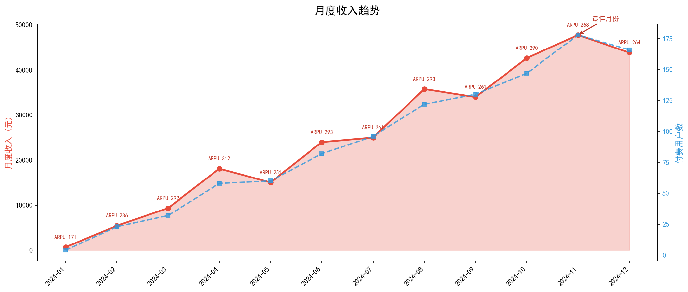
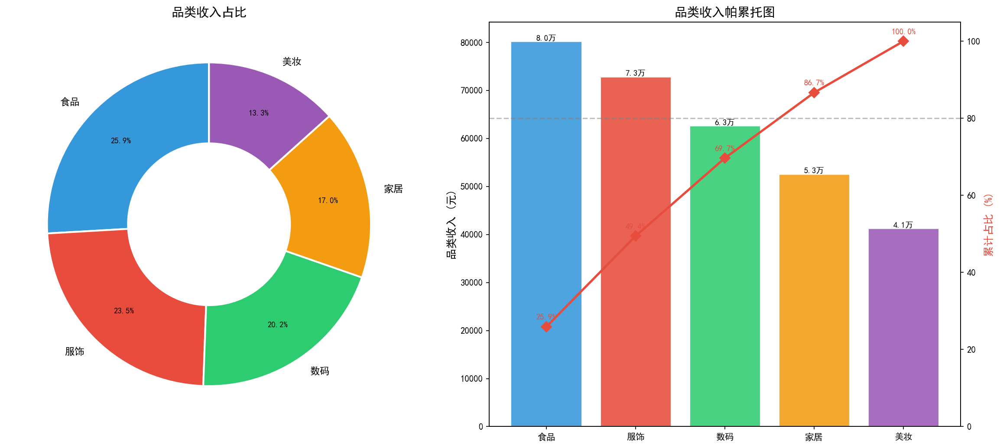
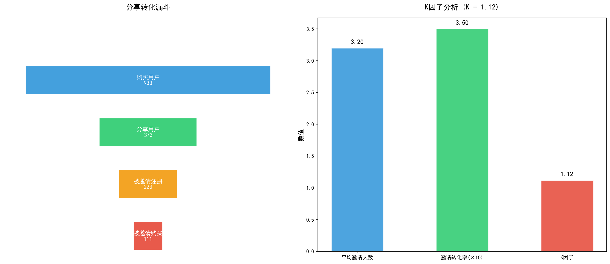

Data Analysis Project
AARRR 海盗指标
用户增长分析
5,000 用户 · 16,026 事件 · ¥309,746 收入
Acquisition
Activation
Retention
Revenue
Referral
AARRR 是什么？
用户增长的全链路漏斗模型
Acquisition 获客
用户从哪里来？渠道效率如何？
用户从哪里来？渠道效率如何？
Activation 激活
用户体验到 Aha Moment 了吗？
用户体验到 Aha Moment 了吗？
Retention 留存
用户愿意持续回来吗？
用户愿意持续回来吗？
Revenue 收入
用户愿意付费吗？收入结构如何？
用户愿意付费吗？收入结构如何？
Referral 传播
用户会推荐给好友吗？K因子多少？
用户会推荐给好友吗？K因子多少？

核心指标一览
全漏斗关键数据
5,000
总用户数
¥23.51
平均 CAC
74.5%
激活率
44.2%
次日留存
¥309,746
总收入
¥62
ARPU
18.7%
付费转化率
0.24
K 因子
关键发现：付费转化率仅 18.7% 是最大瓶颈；K 因子 0.24 远低于病毒式增长阈值 1.0，传播效应微弱。
Acquisition 获客分析
5大渠道，自然搜索占比最高


发现：自然搜索用户量最大(30.4%)但 CAC 最低(¥5)；付费广告用户多但 CAC 高达 ¥50。口碑推荐 CAC 仅 ¥10 且激活率最高，应加大投入。
获客趋势
月度新增用户与累计增长

趋势：下半年用户增长明显加速，Q4 大促期间新增用户数约为 Q1 的 5 倍，增长曲线呈指数型。
Activation 激活分析
整体激活率 74.48%，口碑推荐渠道最优

激活率排名
1. 口碑推荐76.5%
2. 应用商店75.3%
3. 社交媒体75.1%
4. 自然搜索74.7%
5. 付费广告72.5%
洞察：付费广告用户激活率最低——可能因为广告吸引了非目标用户，需要优化投放精准度。
Retention 留存分析
留存率衰减曲线 & 同期群热力图


关键：次日留存 44.2% → 7日留存 50.9% → 30日留存 51.2%。各渠道留存率差异不大(34%~38%)，说明留存问题更多来自产品本身而非渠道质量。
Revenue 收入分析
月度收入趋势 & 品类结构


¥62
ARPU
¥332
ARPPU
18.7%
付费转化率
¥372
LTV
Referral 传播分析
K 因子 0.24 — 传播效应微弱

K 因子解读
K = 平均邀请人数 × 邀请转化率
0.24
K < 1 — 非病毒式增长
需 K ≥ 1 才能实现自发病毒式传播
传播漏斗
购买用户 933 → 分享用户 174(18.7%) → 被邀请注册 104 → 被邀请购买 52
优化策略建议
按优先级排序的行动方案
P0 紧急且重要
- 提升付费转化率（当前仅18.7%）
- 降低付费门槛，提供试用体验
- 优化加购→购买转化路径
- 对高意向用户精准推送优惠券
P0 紧急且重要
- 提升次日留存（当前44.2%）
- 优化新用户引导流程
- 设计签到/任务等习惯机制
- 建立流失预警模型
P1 重要不紧急
- 优化渠道组合
- 加大口碑推荐投入（CAC¥10）
- 缩减低效付费广告
- 建立渠道质量评估体系
P2 长期布局
- 构建传播机制
- 设计双向推荐奖励
- 优化分享路径降低摩擦
- 目标：K因子从0.24提升至0.5+
30/90 天行动计划
分阶段落地策略
30 天冲刺
1. 优化新用户引导流程，目标激活率提升 15%
2. 梳理核心渠道，暂停低质量渠道投放
3. 建立留存监控看板（次日/7日/30日）
4. 上线首单优惠，目标付费转化率提升至 25%
90 天战略
1. 上线推荐奖励功能，目标 K 因子 > 0.5
2. 建立用户分群精细化运营体系
3. 完成同期群分析，识别留存异常批次
4. AARRR + RFM 结合分析，差异化运营
北极星指标：活跃用户数 × ARPU — 反映增长与商业化的综合健康度
核心发现与总结
获客：自然搜索是最大渠道(30.4%)，但口碑推荐质量最高（激活率76.5%，CAC仅¥10）
激活：整体74.5%，付费广告用户激活率最低(72.5%)，需优化投放精准度
留存：次日留存44.2%，各渠道差异不大，问题在产品本身而非渠道
收入：付费转化率18.7%是最大瓶颈，LTV ¥372，LTV/CAC = 15.8 健康可行
传播：K因子0.24，传播效应微弱，需设计更强的推荐激励和社交裂变机制
Python + Pandas + Matplotlib 自动生成 | AARRR 海盗指标模型